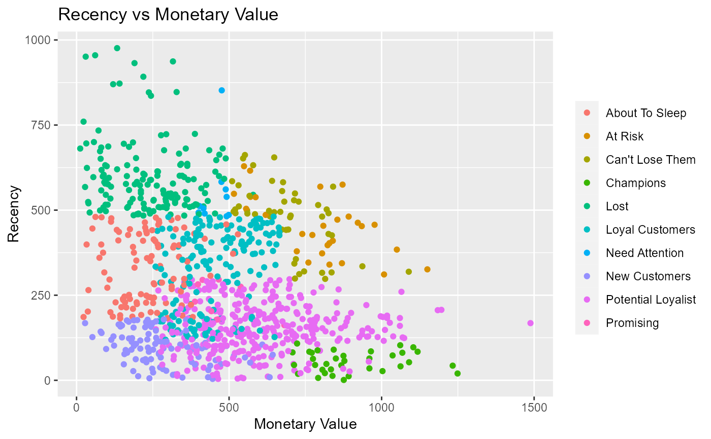
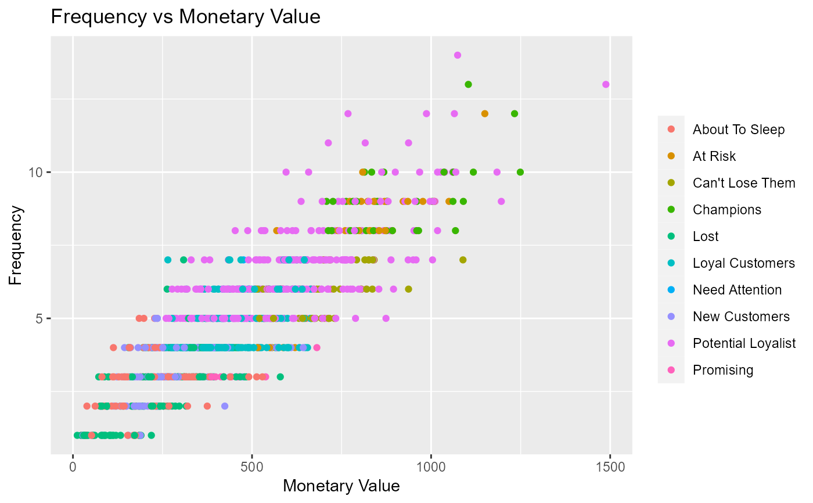
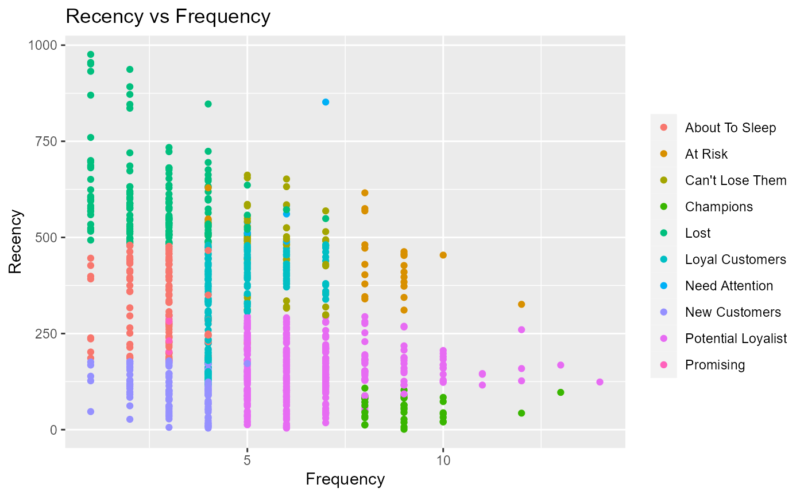

Generate scatter plots to examine the relationship between recency, frequency and monetary value.
Usage
rfm_plot_segment_scatter(
segments,
x = "monetary",
y = "recency",
xaxis_label = NULL,
yaxis_label = NULL,
plot_title = NULL,
legend_title = NULL,
print_plot = TRUE
)Arguments
- segments
Output from
rfm_segment.- x
Metric to be represented on X axis.
- y
Metric to be represented on Y axis.
- xaxis_label
X axis label.
- yaxis_label
Y axis label.
- plot_title
Title of the plot.
- legend_title
Title of the plot legend.
- print_plot
logical; if
TRUE, prints the plot else returns a plot object.
Examples
# analysis date
analysis_date <- as.Date('2006-12-31')
# generate rfm score
rfm_result <- rfm_table_order(rfm_data_orders, customer_id, order_date,
revenue, analysis_date)
# segment names
segment_names <- c("Champions", "Potential Loyalist", "Loyal Customers",
"Promising", "New Customers", "Can't Lose Them",
"At Risk", "Need Attention", "About To Sleep", "Lost")
# segment intervals
recency_lower <- c(5, 3, 2, 3, 4, 1, 1, 1, 2, 1)
recency_upper <- c(5, 5, 4, 4, 5, 2, 2, 3, 3, 1)
frequency_lower <- c(5, 3, 2, 1, 1, 3, 2, 3, 1, 1)
frequency_upper <- c(5, 5, 4, 3, 3, 4, 5, 5, 3, 5)
monetary_lower <- c(5, 2, 2, 3, 1, 4, 4, 3, 1, 1)
monetary_upper <- c(5, 5, 4, 5, 5, 5, 5, 5, 4, 5)
# generate segments
segments <- rfm_segment(rfm_result, segment_names, recency_lower,
recency_upper, frequency_lower, frequency_upper, monetary_lower,
monetary_upper)
# generate plots
rfm_plot_segment_scatter(segments, "monetary", "recency")

rfm_plot_segment_scatter(segments, "monetary", "frequency")

rfm_plot_segment_scatter(segments, "frequency", "recency")
